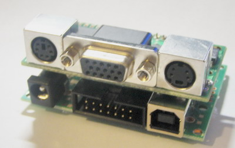

MicroVGA KIT91SAM7S
 The KIT91SAM7S-MicroVGA is a low-cost ARM7 development kit for use with the MicroVGA-TEXT. It is recommended for everyone who is starting with the MicroVGA. The board comes pre-loaded with firmware and can be programmed using free tools (GNU CC for ARM7 and Atmel SAM-BA), no additional programmers/interfaces are required. Demo source code is available for free, which means that you can start evaluating the MicroVGA immediately, without having to hassle with microcontroller setup or communication issues. Furthermore, the board contains powerful ARM7 MCU (AT91SAM7S256) providing 60MIPS computing power and a lot of useful peripherals.
The board can be used in standalone mode, without the MicroVGA. However, the real fun is with the MicroVGA connected!
Features
- MCU: AT91SAM7S256 32bit ARM7TDMI with 256K Bytes Program Flash, 16K Bytes RAM, USB 2.0, RTT, 10 bit ADC 384 ksps, 2x UARTs, TWI (I2C), SPI, 3x 32bit TIMERS, 4x PWM, SSC, WDT, PDC (DMA) for all peripherals, up to 60MHz operation
- Socket for MicroVGA-TEXT connected to DBGU module of AT91SAM7
- USB connector and circuit
- Programming via USB using Atmel® SAM-BA USB bootloader (use AT91SAM7SE256-EK as target board)
- Standard ARM 14 pin JTAG connector for optional programming and debugging
- MicroSD card connection
- IEEE 1149.1 Boundary scan interface
- Three LEDs: 2 user programmable, 1 power
- Pushbutton
- The board comes pre-programmed with MicroVGA demonstration application
- Expansion header for all I/O ports
- Reset circuit
- External DC power supply or USB powered
- 18.432 MHz crystal (PLL availale on-chip)
- On-board 3.3V voltage regulator up to 500mA current
Documentation
Not available at the moment.Downloads
- MicroVGA conio library, use AT91SAM7 design (GCC or IAR)
- Atmel SAM-BA and USB drivers
- Atmel SAM-BA 2.9 for Linux